An eight-page digest of Edgar Rice Burroughs, 1912. The Arizona cave, and the red star that will not let him go. Speech under the pictures; the sound stays in the frame. Text from Project Gutenberg #62.
A Princess of MarsTurned to Stone
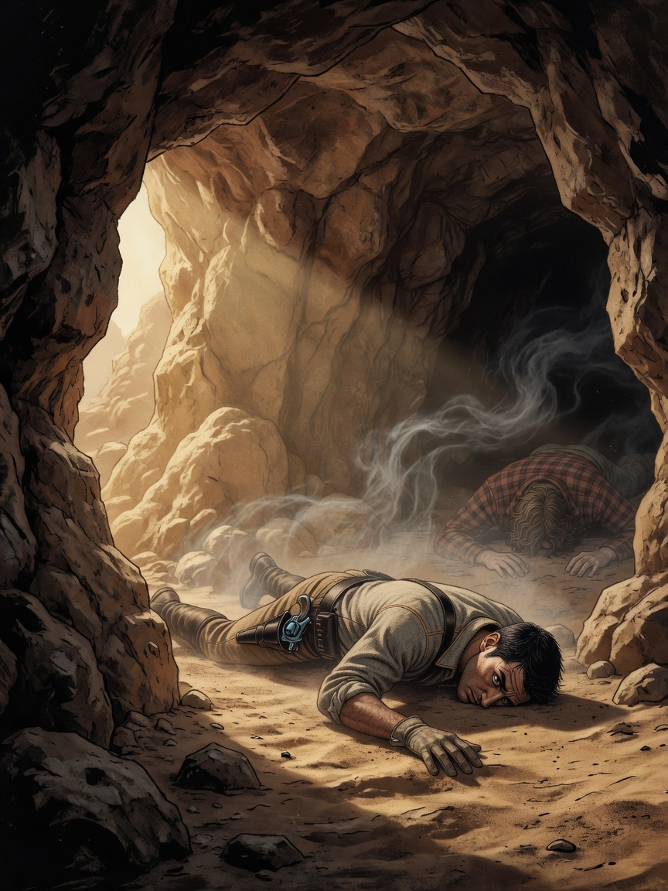
The Arizona cave. Morning.
Carter A sense of delicious dreaminess overcame me. Then horses. I attempted to spring to my feet.
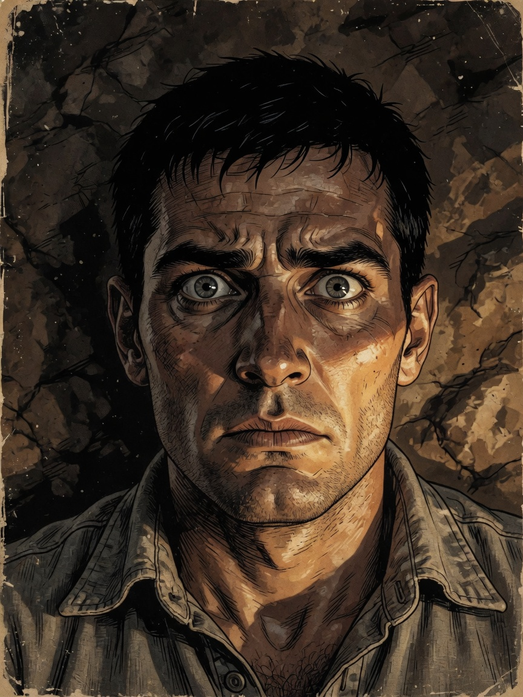
Carter My muscles refused to respond. I was as unable to move as though turned to stone.
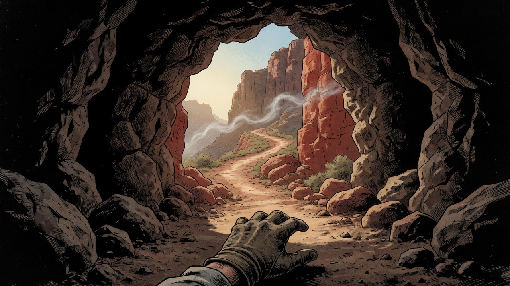
The opening. Daylight.
Carter A slight vapor filled the cave. A faintly pungent odor. Some poisonous gas — and yet I was thoroughly awake.
1
A Princess of MarsThe Faces
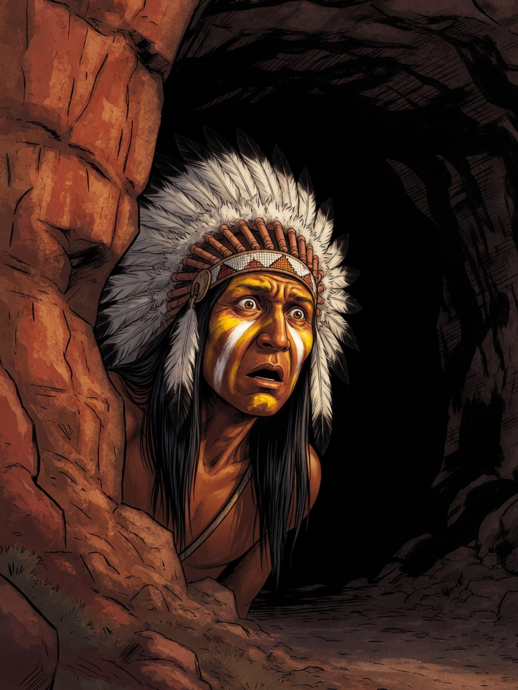
Carter A war-bonneted, paint-streaked face was thrust around the shoulder of the cliff.
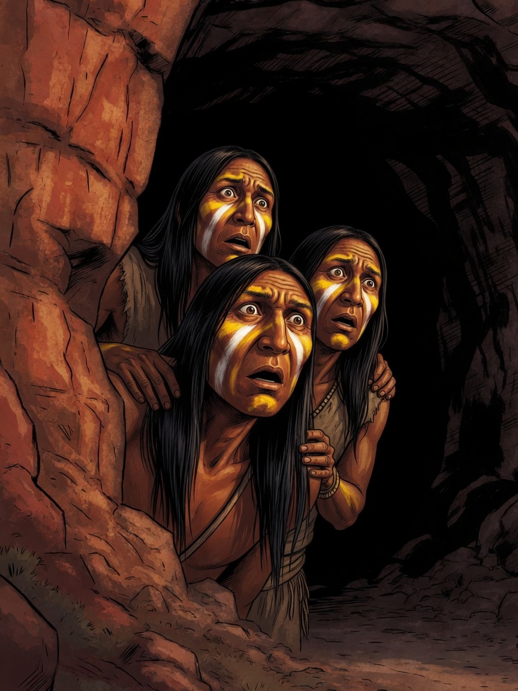
Carter A third and fourth and fifth, craning their necks. Each face was the picture of awe and fear.
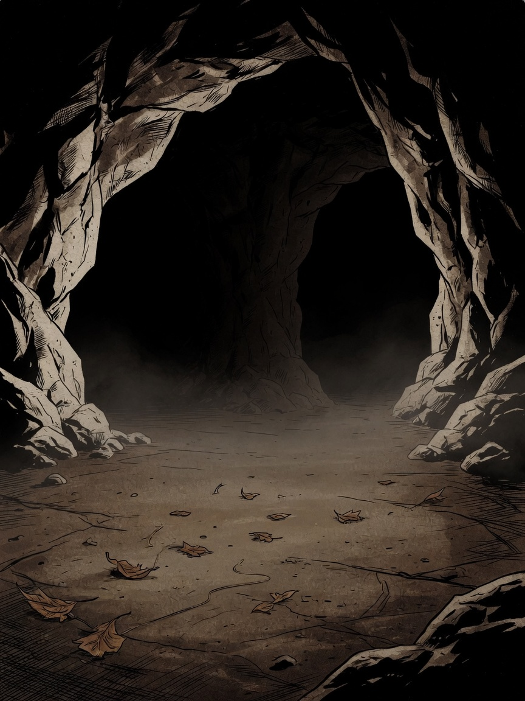
OOOH—
Carter A low but distinct moaning sound issued from the recesses of the cave behind me.
2
A Princess of MarsStampede
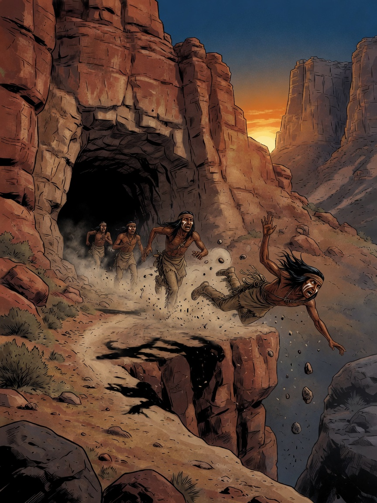
THUD!
Carter They turned and fled in terror. One of the braves was hurled headlong from the cliff to the rocks below.
Carter Paralyzed, with my back toward some horrible and unknown danger. The last word in fearsome predicaments.
3
A Princess of MarsThe Silence of the Dead
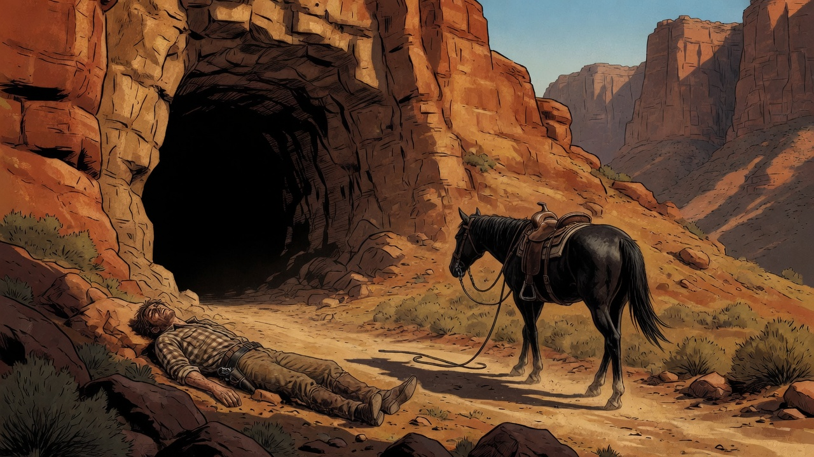
Late afternoon.
Carter My horse started slowly down the trail. I was left alone with my unknown companion and the dead body of my friend.
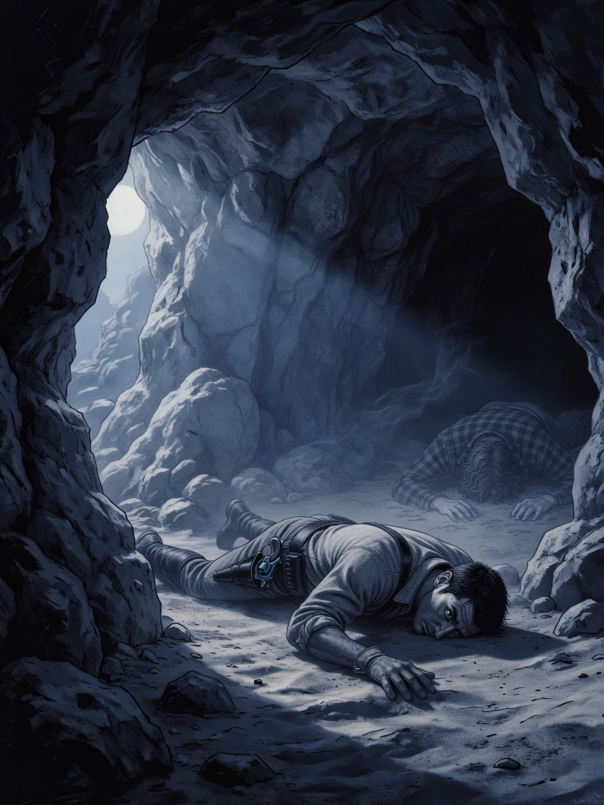
Midnight.
Carter From then until possibly midnight all was silence, the silence of the dead. Then the awful moan of the morning.
4
A Princess of MarsThe Snap
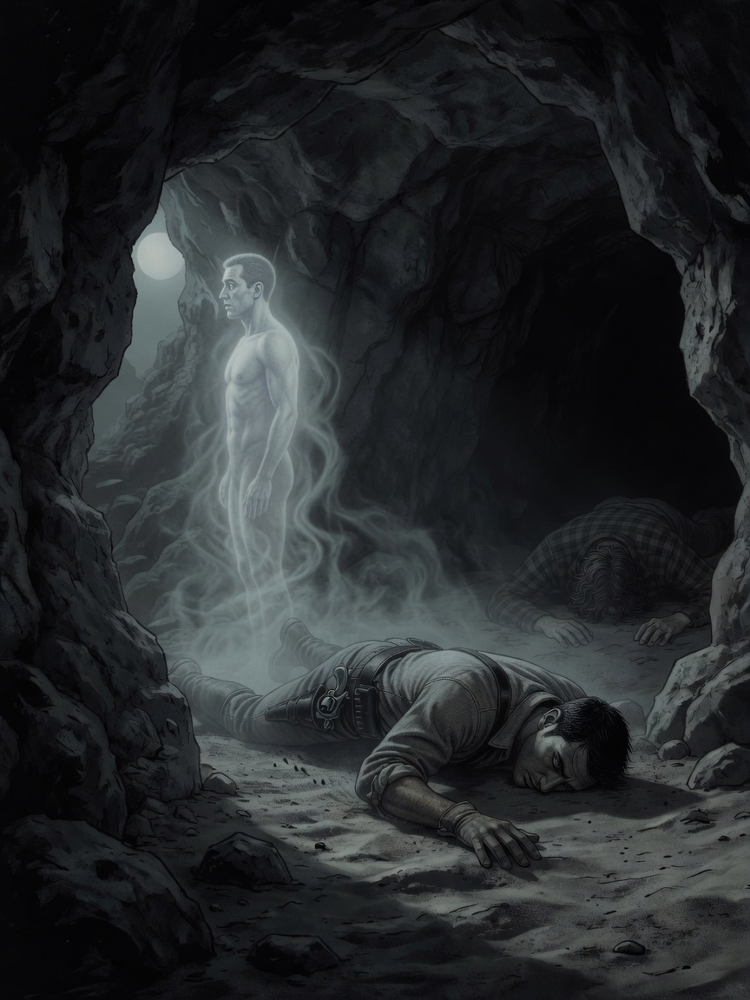
SNAP!
Carter Something gave. A sharp click as of the snapping of a steel wire. And I stood. There before me lay my own body.
Carter I lay clothed — and yet here I stood naked as at the minute of my birth. Is this then death? I could feel my heart pounding.
5
A Princess of MarsArizona Night
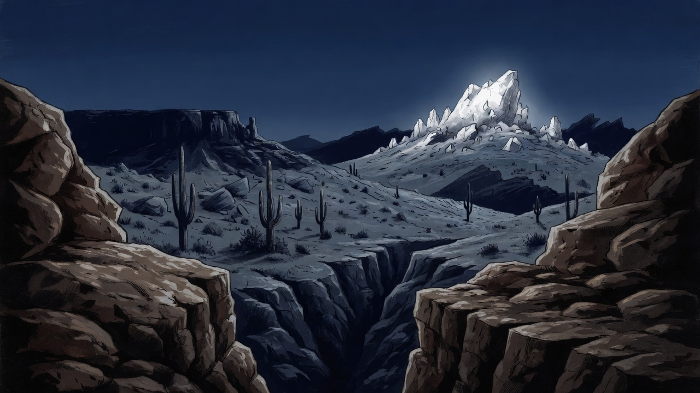
The ledge. Starlight.
Carter I leaped through the opening into the starlight of a clear Arizona night. The crisp mountain air acted as an immediate tonic.
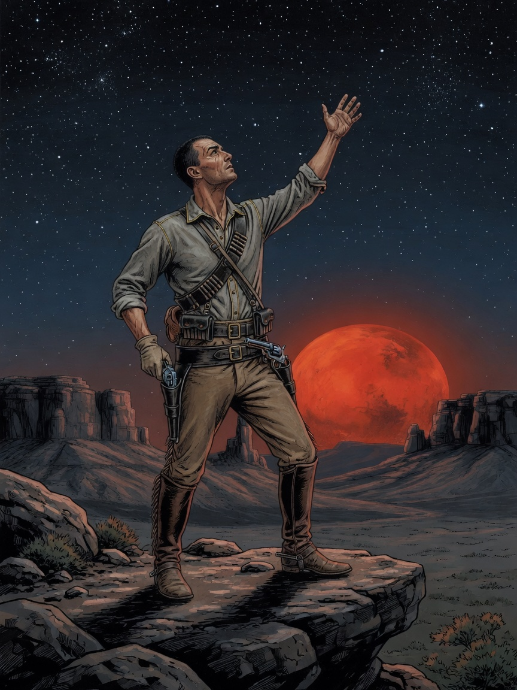
Carter My attention was riveted by a large red star close to the distant horizon. Mars, the god of war.
6
A Princess of MarsThe God of My Vocation
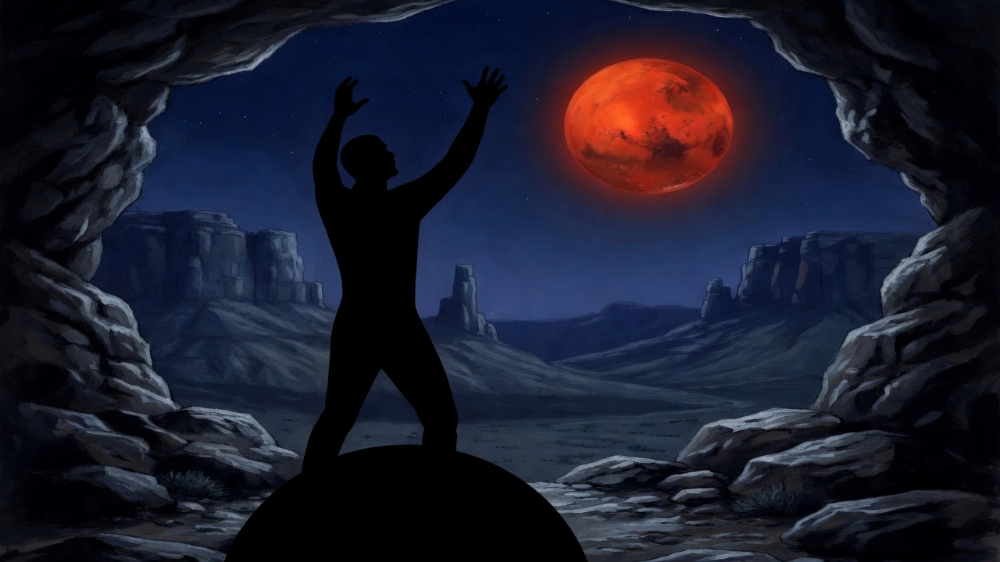
Carter It seemed to call across the unthinkable void, to lure me to it, to draw me as the lodestone attracts a particle of iron.
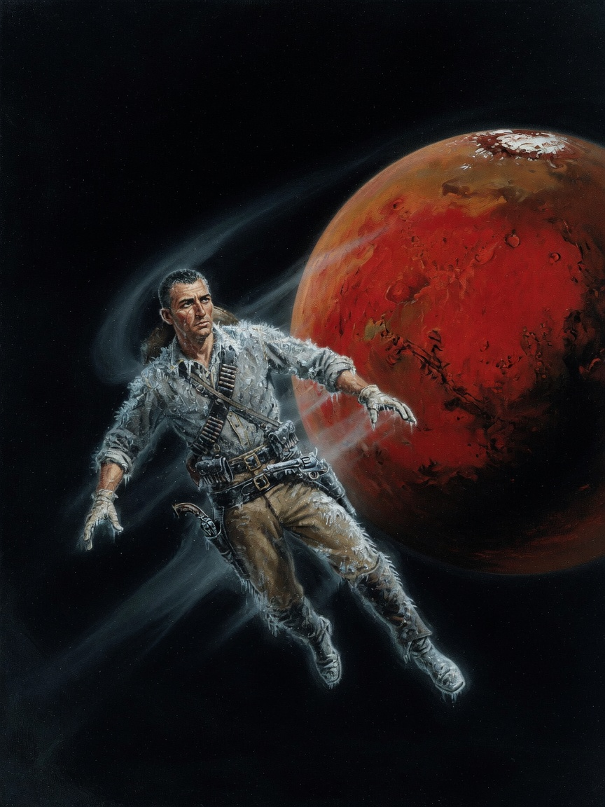
WHOOSH!
Carter I closed my eyes, stretched out my arms toward the god of my vocation, and felt myself drawn with the suddenness of thought through the trackless immensity of space.
7
A Princess of MarsTo Be Continued
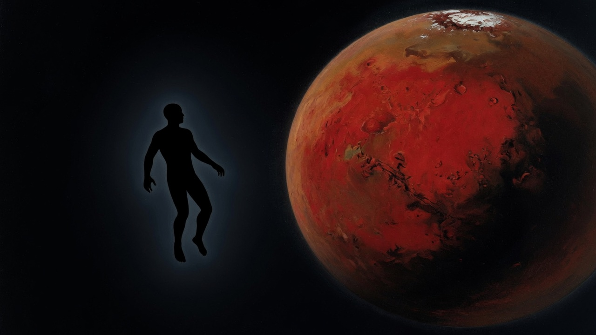
Utter darkness.
Carter There was an instant of extreme cold and utter darkness.